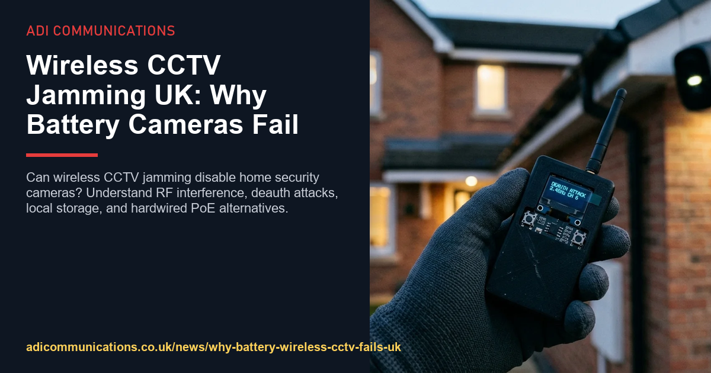
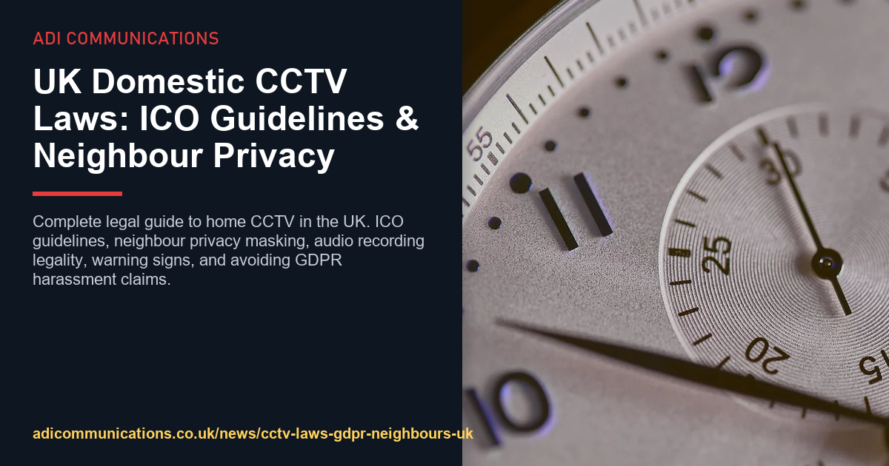
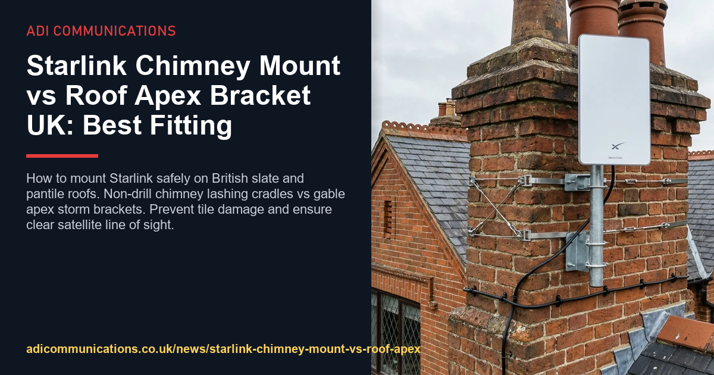

CCTV & WiFi
Wireless CCTV Jamming UK: Why Battery Cameras Fail
Can wireless CCTV jamming disable home security cameras? Understand RF interference, deauth attacks, local storage,…
UK Home Security · Independent Guides
We tear down the jargon and explain what actually protects British homes - CCTV jamming, GDPR, camera laws and safe installations - in plain English you can act on.
Fresh, practical answers. Each guide links to the full technical deep-dive written by an engineer who fits systems every week.

Can wireless CCTV jamming disable home security cameras? Understand RF interference, deauth attacks, local storage,…
Transparent UK CCTV installation costs for 2026. 2-camera (£495), 4-camera ColorVu (£695), 8-camera commercial…

Complete legal guide to home CCTV in the UK. ICO guidelines, neighbour privacy masking, audio recording legality,…

How to mount Starlink safely on British slate and pantile roofs. Non-drill chimney lashing cradles vs gable apex…
The exact questions British homeowners ask us most - answered straight.
Yes. Portable 2.4GHz radio frequency jammers and de-authentication transmitters flood the unlicensed wireless spectrum with disconnect packets. This severs the camera's communication with the broadband router before cloud video upload starts, preventing alerts and leaving zero evidence.
Low temperatures thicken the liquid electrolyte in lithium-ion cells, increasing internal resistance and accelerating voltage drop under load. Furthermore, battery management firmware disables solar and mains charging below 0°C to prevent permanent lithium plating, causing battery cameras to deplete rapidly in cold snaps.
Standard claims are settled based on physical evidence of forced entry, but policies with specific CCTV warranties require declared security systems to be maintained in working order. If equipment was uncharged or unmaintained, loss adjusters may review policy condition compliance. Check your individual policy schedule.
To conserve battery power, wireless cameras sleep until their passive infrared sensor detects thermal movement. Waking the camera, establishing a Wi-Fi handshake, and negotiating cloud encryption takes two to four seconds, by which time an intruder has already walked past the lens.
Hardwired Power over Ethernet Cat6 cameras powered continuously by a central Network Video Recorder. Solid copper cabling isolates video data from over-the-air RF interference, operates down to minus 30 degrees Celsius, records 24/7 without cloud subscriptions, and provides high-bitrate 4K colour night surveillance.
Generally no. Consumer battery cameras lack an RJ45 Ethernet port. The sensible approach is replacing vulnerable exterior perimeter cameras with commercial PoE 4K IP cameras while retaining a wireless video doorbell purely for daytime visitor convenience.
Who's behind this
ADI Communications fits, maintains and audits home security systems across the UK every week. These guides come from real sites, real faults and real customer questions - Gary, the lead engineer, writes the notes you read here.
About ADI Communications“If a system can be bypassed with a £20 gadget from the internet, I want you to know about it before I fit it.”
Send us your situation and get an honest recommendation - no pressure, no jargon.
Ask us anything